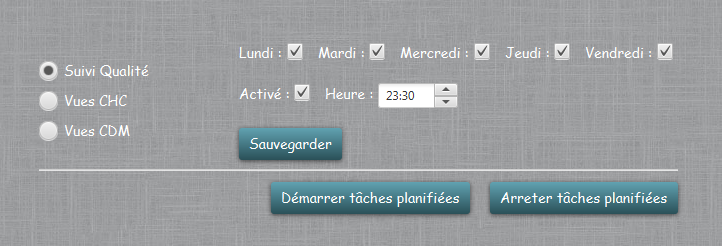

Planificateur
Cet écran permet de gérer la planification des tâches de traitement, pour la mise à jour des fichiers Excel, ainsi que de la création des vues de maintenance :
- Suivi des anomalies : Cette tâche lancera le traitement des fichiers de suivi des anomalies (JAVA, DataStage, COBOL). On peut choisir quels jours le traitement passera ainsi que l'heure du
traitement. Il faut bien penser à sauvegarder les modifications ou lancer la tâche avant de changer d'écran, sinon les modifications seront perdues.

- Création des vues CHC/CDM : Cette tâche lancera la création des nouvelles vues CHC et CDM. avec les même possibilités que le suivi des anomalies. En plus, il y a une option pour prendre en
compte les éditions des annèes suivantes et/ou précedentes.